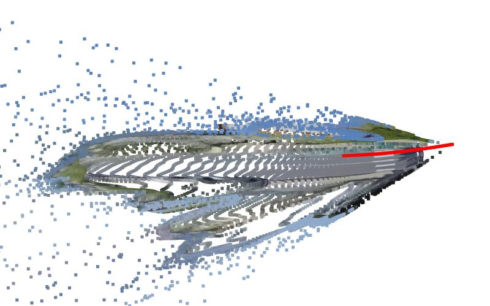
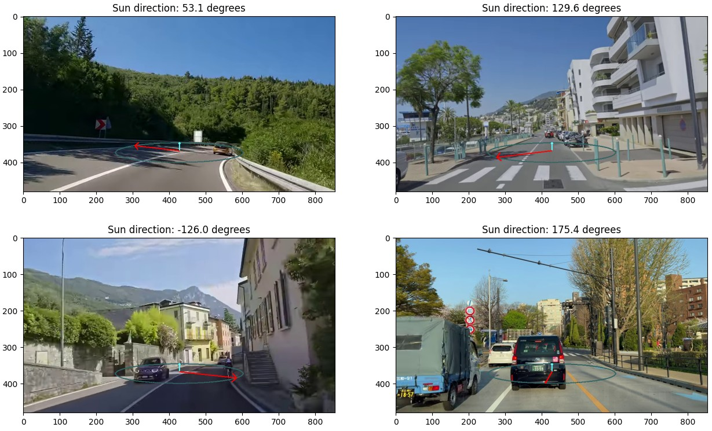
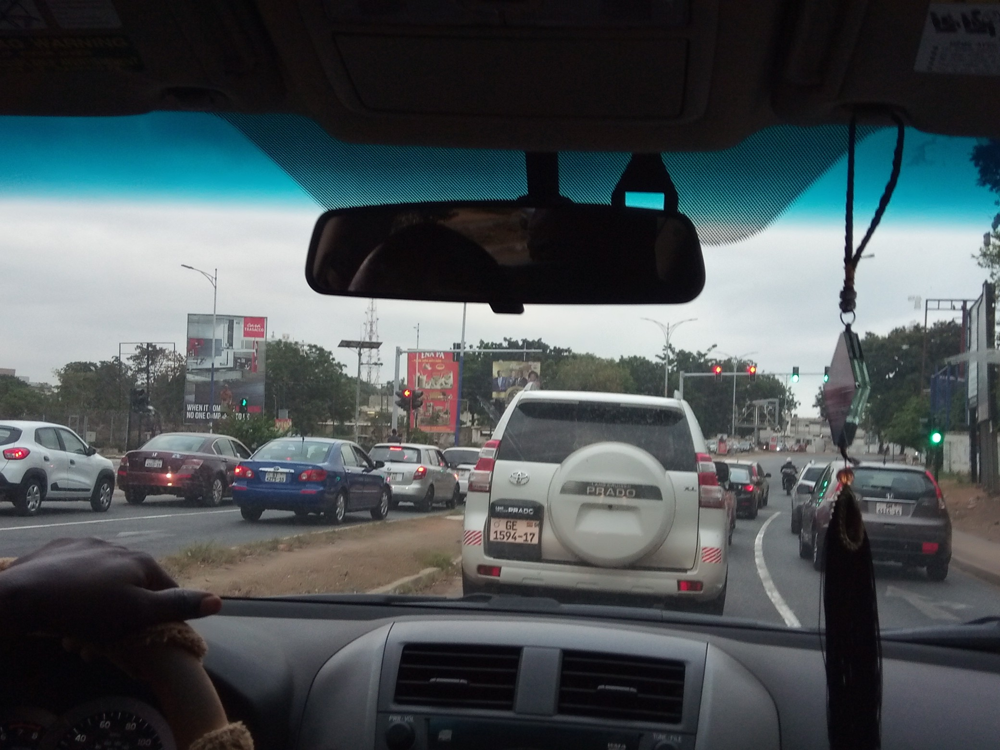

At Astrarium, we are dedicated to exploring new possibilities in technology and innovation. Our mission is to push the boundaries of what’s possible, with a vision that stretches beyond the stars.
We are pioneers of Metric Monocular Visual Odometry. From a single video we can compute accurate speed and rotation without relying on any other data sources for scale. Our API allows developers to run our algorithms directly on their own data with pricing dependent on usage. To find out how we can run these algorithms on your data, please get in touch with our team who can help you get set up.
We are experts in Global Localisation and Sensing Technology. Our proprietary techniques can process multiple data modalities, and can even operate with just monocular video alone. Our APIs allow you to submit images and videos for Localisation and can be used to clean up and combine data sources from GNSS receivers and other global odometry sources.
Training generalisable models requires diverse datasets. Astrarium carefully curates Video, Odometry, Localisation (VOL) datasets from across the globe with a focus on quality, diversity, and novelty. From a rainy walk in Tokyo, Japan, to a dusty drive in Accra, Ghana, we aim to provide large quantities of training data without the need to deploy costly data collection systems in locations far from your operating area.
